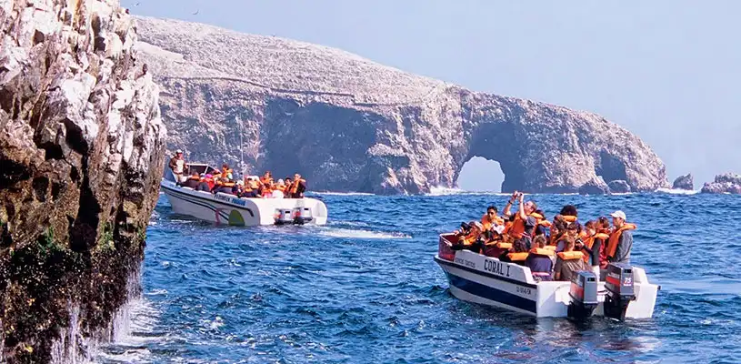

Ica: Tour por la isla Ballestas
Precio: $25.00
Ubicación: Ver en Google Maps
Descripción
Disfruta de un emocionante tour por la isla Ballestas en Ica. Descubre la diversidad de la vida marina y observa de cerca a las colonias de lobos marinos y aves guaneras. Una experiencia imperdible para los amantes de la naturaleza y la aventura.
Detalles de la Actividad
- Duración: 2 horas aproximadamente.
- Horario: Salida a las 8:00 am desde el puerto de Paracas.
- Incluye: Transporte en bote, guía turístico, y equipo de seguridad.
Recomendaciones
- Llevar ropa cómoda y protector solar.
- No olvides llevar una cámara para capturar los hermosos paisajes marinos.
- Se recomienda llevar agua y snacks para disfrutar durante el viaje.
Reservas y Cancelaciones
Para realizar una reserva, contáctanos con al menos 48 horas de antelación. Las cancelaciones deben hacerse con al menos 24 horas de anticipación para obtener un reembolso completo.